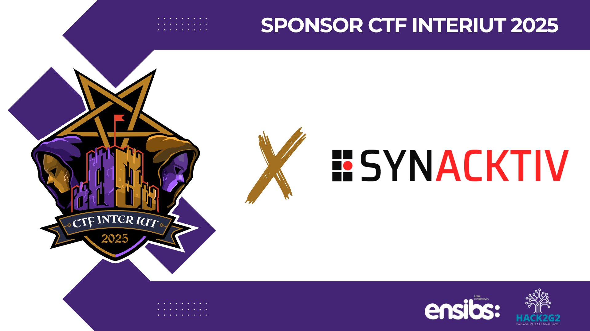
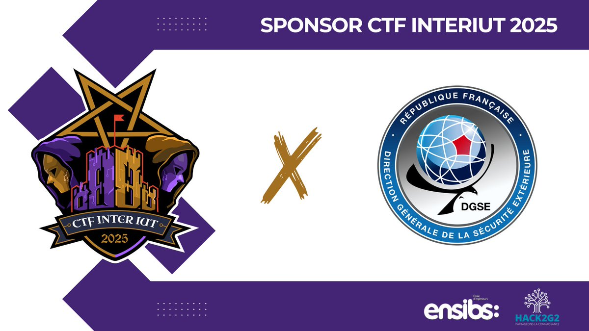
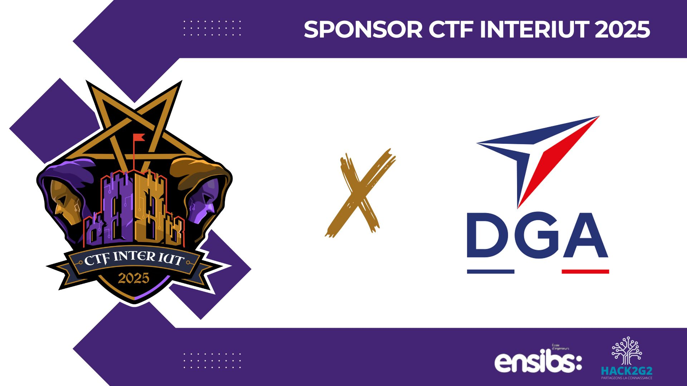
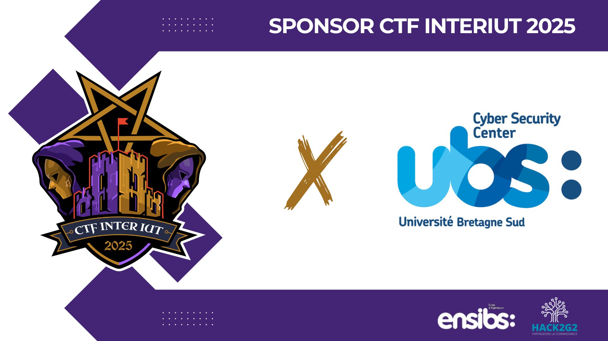
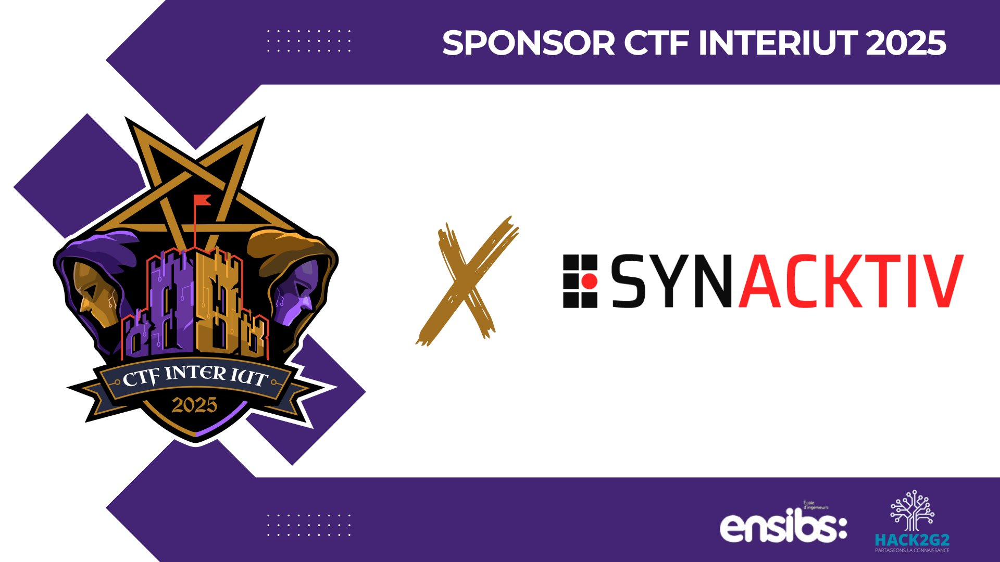
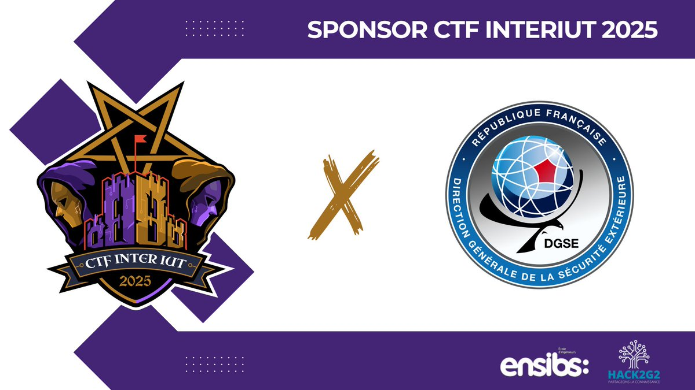
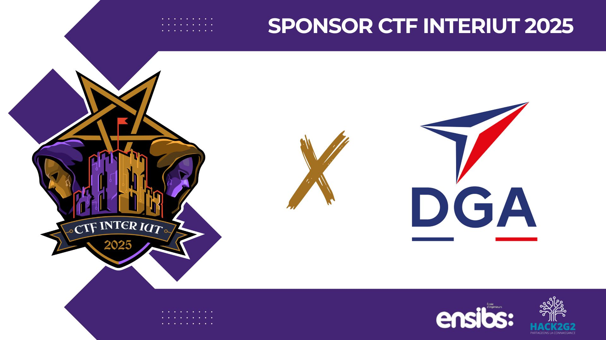
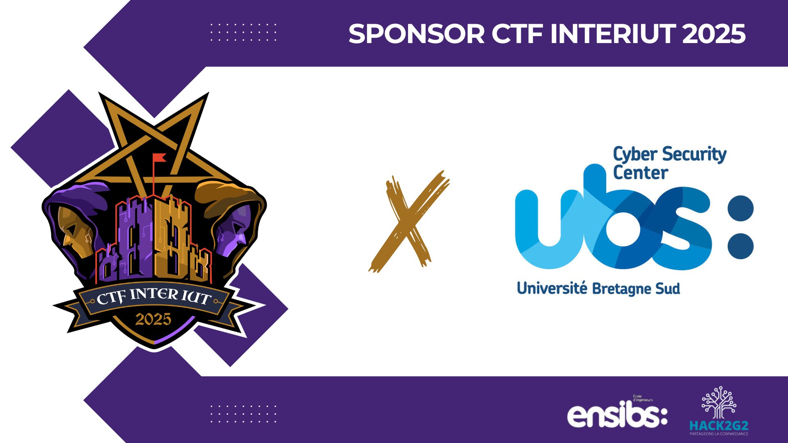

Mon Portfolio
🚀 Projets Professionnels

Infrastructure Réseau d'un Campus
Conception et déploiement d'une architecture réseau complexe pour un campus universitaire multi-sites. Le projet a couvert l'optimisation de l'adressage (VLSM), la segmentation (VLANs), le routage dynamique (RIP) et la mise en place de politiques de sécurité avancées (ACL, NAT).
{# Changed this button to trigger the modal #} Voir détailTéléphonie sur IP
Mise en place d'une solution IPBX complète pour un atelier d'artistes, intégrant un serveur vocal interactif (IVR), la gestion des appels basées sur conditions temporelles, et des messageries vocales individuelles.
Détails sur GitHubServeur Web sur Debian
Déploiement et configuration sécurisée d'un serveur web LAMP (Linux, Apache, MySQL, PHP) sur Debian 11, incluant la gestion réseau et la mise en production d'une application web.
Voir le CodeActive Directory avec Samba4
Implémentation d'un contrôleur de domaine Active Directory sur Linux avec Samba4, permettant une gestion centralisée des utilisateurs, groupes et politiques de sécurité comme alternative robuste à Windows Server.
Consulter le Projet✨ Projets Personnels
Certification SecNumAcadémie
Obtention de la certification ANSSI "SecNumAcadémie", attestant de solides connaissances fondamentales en cybersécurité, de la protection des données à la gestion des risques numériques.
{# NEW: Add button to trigger SecNumAcademy modal #} Voir détailParticipation CTF Vannes
Participation active à la compétition "Capture The Flag" de Vannes, mettant en pratique des compétences en sécurité offensive et défensive (cryptographie, stéganographie, exploitation de binaires).
{# Nouveau bouton pour le modal CTF #} Voir détail
 






